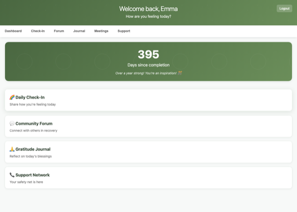
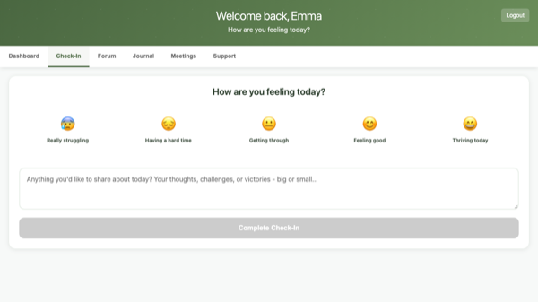
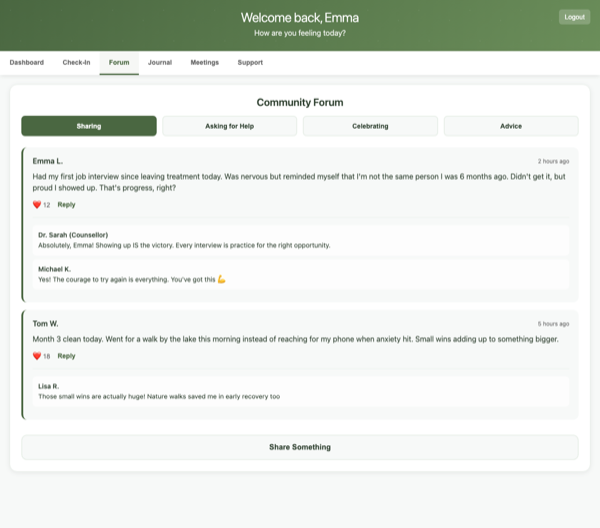
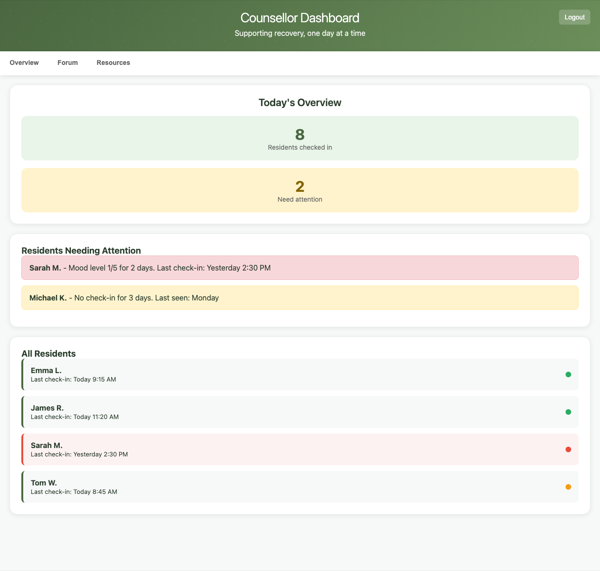

White Oaks Connect is a dedicated mobile app for your residents to stay connected and supported after completing their treatment programme.
Think of it as a digital support network that fits in their pocket. After leaving White Oaks, residents often feel isolated and vulnerable — this app gives them a lifeline back to their recovery community and tools to maintain their progress.
What you and your team would see: A simple web dashboard showing who's checking in regularly, who might be struggling (without invading privacy), and trends across your aftercare community. It's like having a gentle pulse on how your graduates are doing without being intrusive.
Why it matters: Recovery doesn't end at discharge. This app extends your care and support beyond the 30-day programme, helping prevent relapse and keeping people connected to their recovery journey — which ultimately reflects well on White Oaks' long-term success rates.
Live Demo: https://albiemorgan88-hash.github.io/white-oaks-demo/
Try both resident and counsellor views to see the full experience




Setup — £1,000 (one-off)
App Development: £750
iOS + Android app, counsellor dashboard, backend infrastructure, app store accounts & submission
Consultancy: £250
Requirements gathering, configuration, ongoing liaison
Monthly — £100
• Hosting and infrastructure
• Push notifications
• Bug fixes and maintenance
• App store compliance updates
• Monthly usage summary